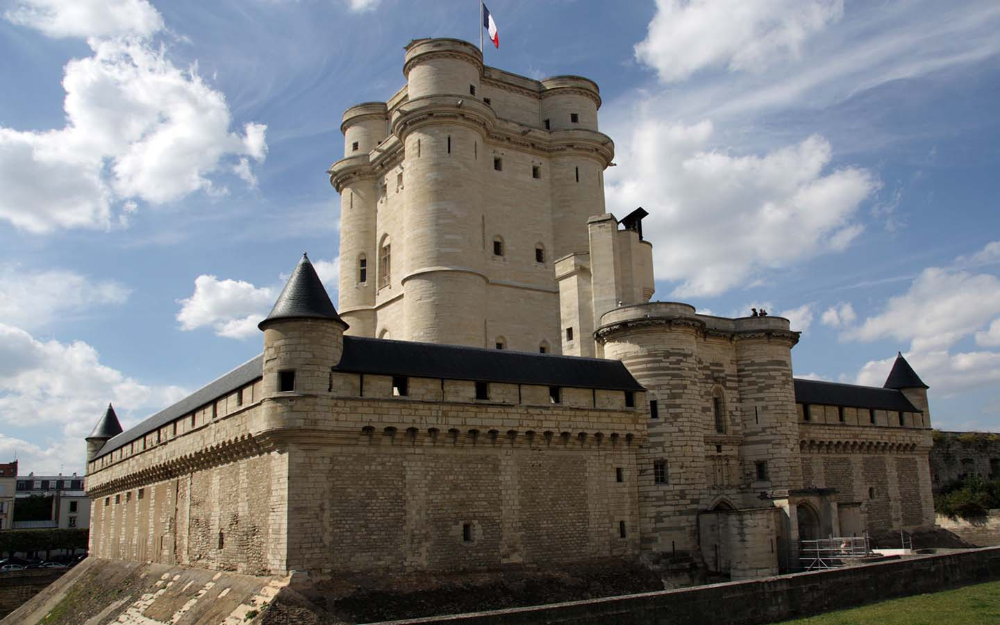
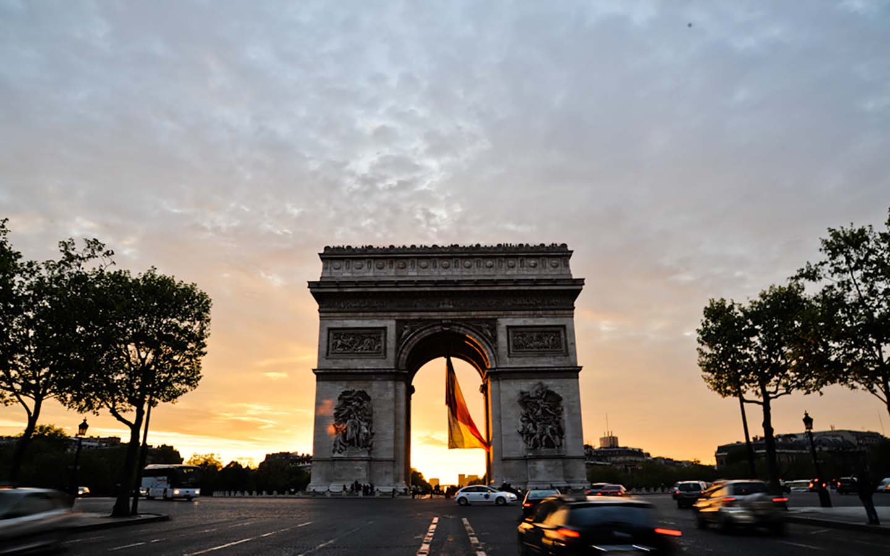
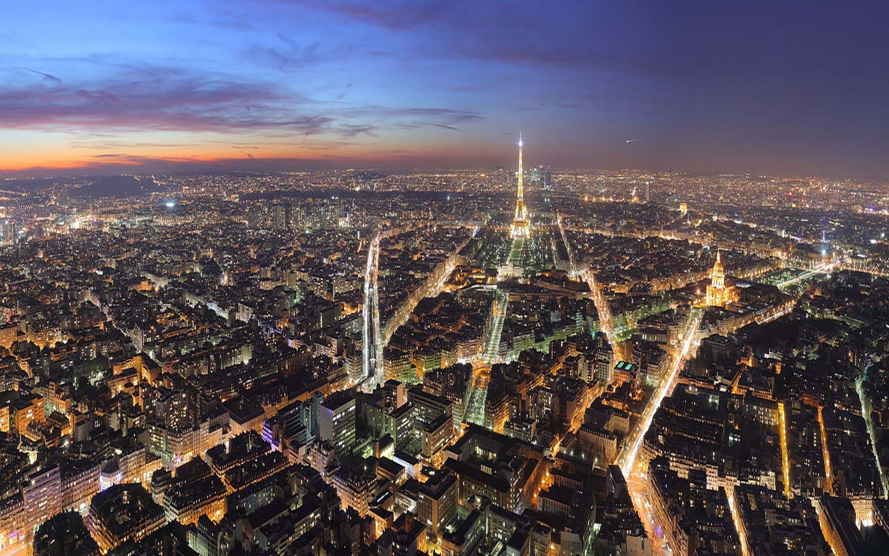
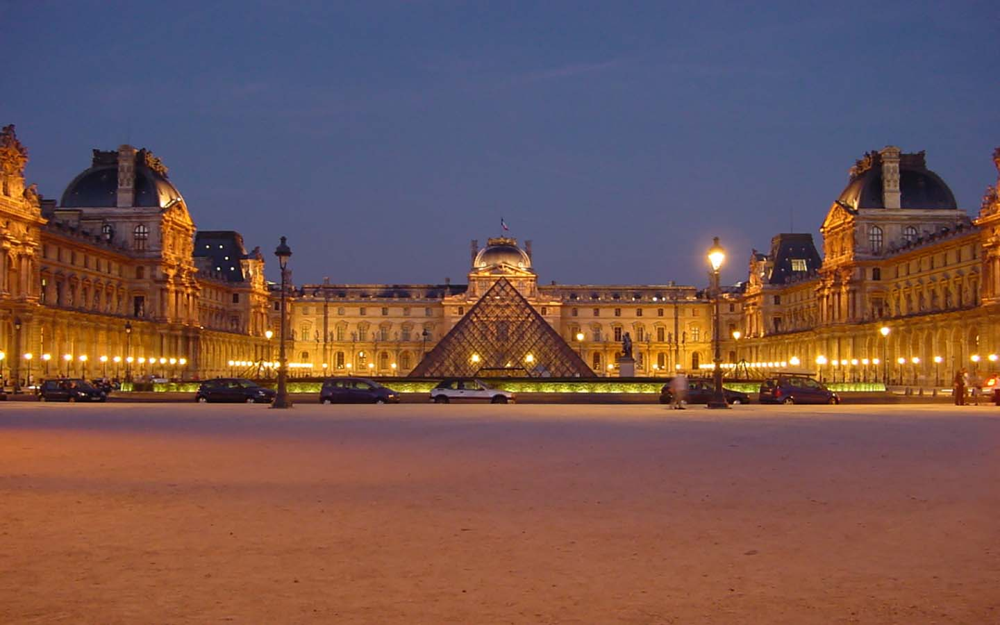

巴黎
巴黎是法国的首都和最大的城市，也是法国的政治与文化中心。其隶属法兰西岛大区之下的巴黎省，也是法兰西岛大区的核心。

巴黎
巴黎在将近1000年的时间之间是西方世界中最大的城市，也曾经是世界上最大的城市。目前是世界上最重要的政治与文化中心之一，对于教育、娱乐、时尚、科学、媒体、艺术与政治等方面皆有重大影响力，被认为是世界上最重要的全球城市之一。

巴黎
即使人口持续增加，巴黎的行政区从1860年以来就没有重大变化。目前“大巴黎”计划仍然持续受到瞩目，该计划将巴黎市区持续延伸，纳入更多巴黎郊区。

巴黎
自从1848年开始，巴黎就逐渐成为法国铁路网的中心。埃菲尔铁塔于1889年世界博览会完工后，法国成为国际瞩目的焦点之一。每年有2,800万人造访巴黎市（巴黎都会区则有4,200万人），其中包括1,700万名国际观光客，也让巴黎成为世界上最多观光客造访的城市。